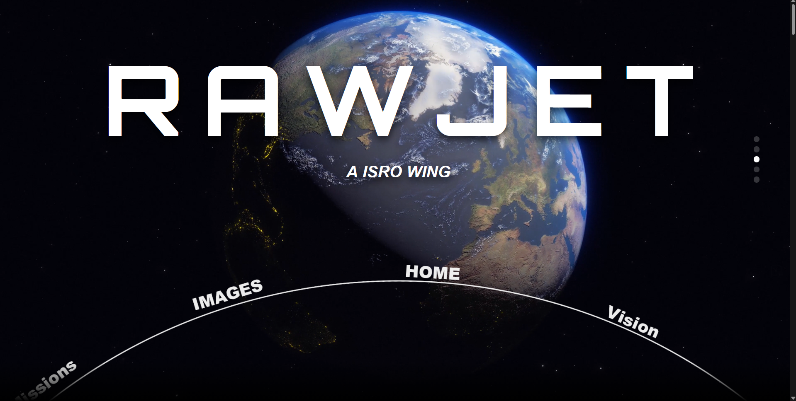
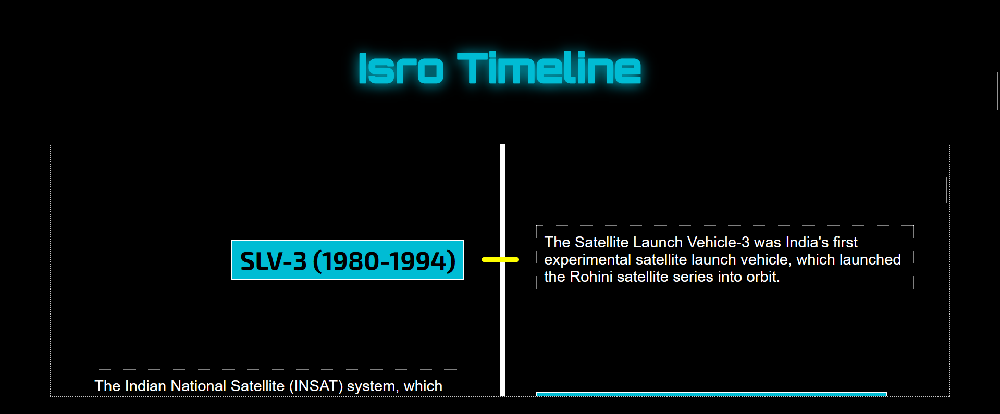
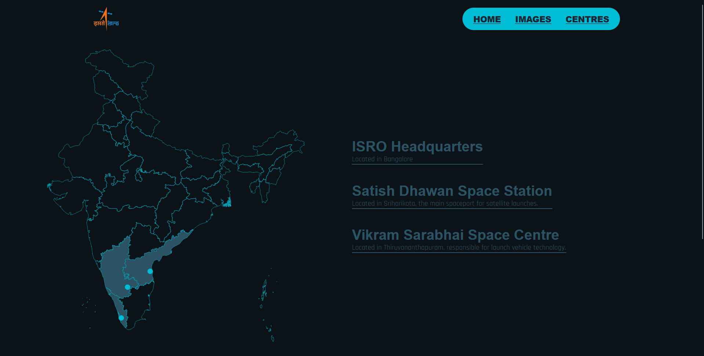
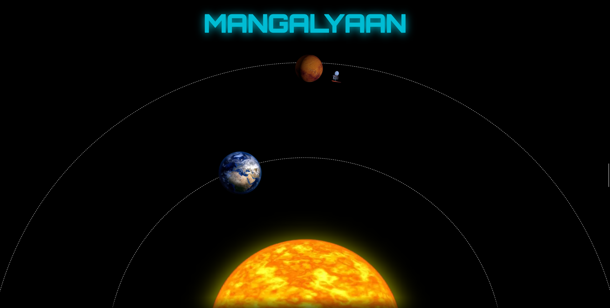
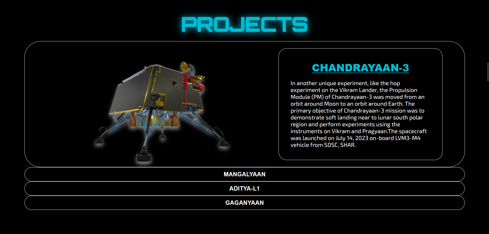

RawJet: ISRO Experience
A visually immersive, animation-driven web application reimagining the digital presence of the Indian Space Research Organisation through cinematic storytelling.

The Problem
Official space agency portals often prioritize data over engagement. For space enthusiasts and students, the lack of interactive storytelling creates a barrier between complex mission data and user inspiration.
The Solution
I transformed static information into an immersive digital journey. By utilizing GSAP-powered motion logic, I created a weightless UI that guides users through missions, timelines, and space-themed aesthetics.
The Animation Blueprint
Scroll-Triggered Parallax
Implemented GSAP ScrollTrigger to decouple foreground and background layers, creating a sense of depth in deep-space environments.
Dynamic Section Transitions
Utilized element staggering and SVG path animations to ensure seamless movement as the user navigates through different mission tiers.
Interactive Component Logic
Micro-interactions on hover and click that provide instant visual feedback, mirroring high-tech space telemetry interfaces.
Mission Showcase
Dedicated visual storytelling for ISRO missions. Each launch is presented as a cinematic event with dynamic data rendering.
Thematic Design
A consistent space-inspired palette with customized typography designed to bridge the gap between "Information" and "Experience."
Tech Constellation
The Visual Experience
Showcasing the cinematic UI, glassmorphism components, and interactive mission modules.





Engineering Challenges
Performance & Rendering
Balancing heavy animations with smooth 60fps performance across various device tiers was a primary focus during the optimization phase.
Consistency & Flow
Ensuring that complex UI components remained legible while being constantly manipulated by scroll-triggered logic.
Takeaway
This project demonstrates my ability to transform real-world concepts into high-quality, interactive applications. It highlights my expertise in animation libraries and my commitment to superior UI/UX standards.